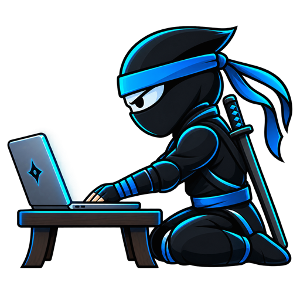
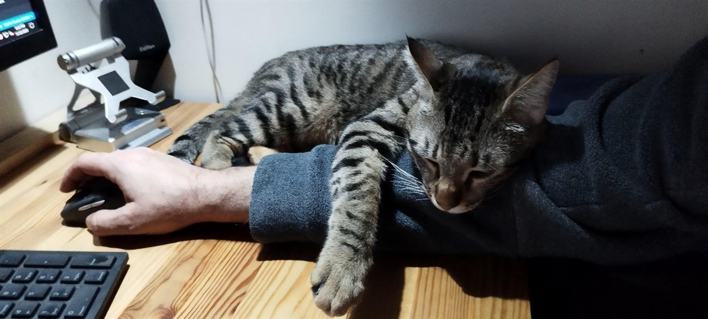

Windows Upgrade Tool v1.0.0
Guides an in-place upgrade to Windows 10 or 11 on x64 PCs, including older hardware. Portable app with a GUI and a command line. Back up your files first.

I build PowerShell scripts and Windows tools that simplify IT, and help people pause before making costly mistakes. Everything here is free to use.
Windows utilities for technicians and advanced home users. Each one is open on GitHub, with release notes and checksums for every download.
Guides an in-place upgrade to Windows 10 or 11 on x64 PCs, including older hardware. Portable app with a GUI and a command line. Back up your files first.
Checks, installs and schedules Windows updates, and audits drivers. Comes as an MSI for deployment or as a portable EXE.
Installs or removes Microsoft Office through Microsoft's own Office Deployment Tool: Office LTSC 2024 or Microsoft 365, with language, Visio and Project options. You need a valid Office license.
Makes Hebrew, Arabic and mixed right-to-left text readable in the ChatGPT/Codex desktop app on Windows, while code stays left-to-right.
Looking for the older WinUpdate Tool V1? It's still on GitHub.
Most of this runs on a not-for-profit basis. Tell me what's going on and I'll take it from there.

I'm a systems administrator in Israel. My day job is keeping an organization's Windows endpoints deployed, patched and monitored; my evenings go into turning the fixes I repeat most into tools anyone can run.
PcNinja is where those tools, and the help I give friends, family and small businesses, live.
For a support request, fill in the short service form. For anything about the tools, open an issue on GitHub.